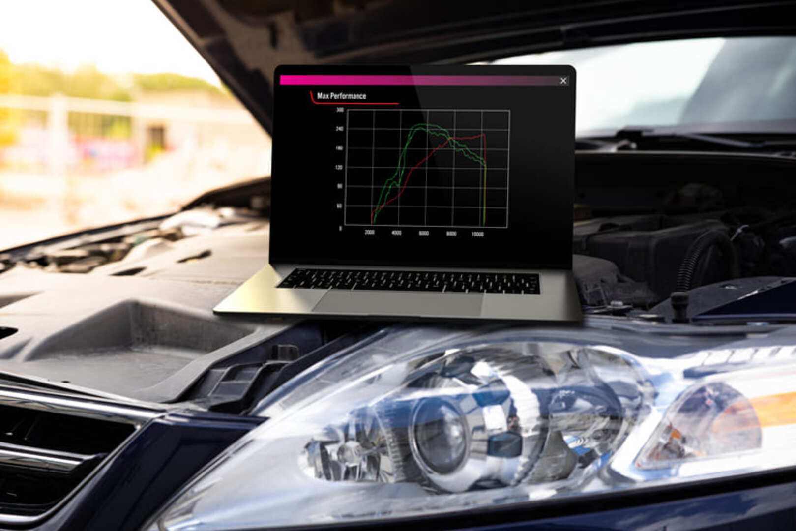
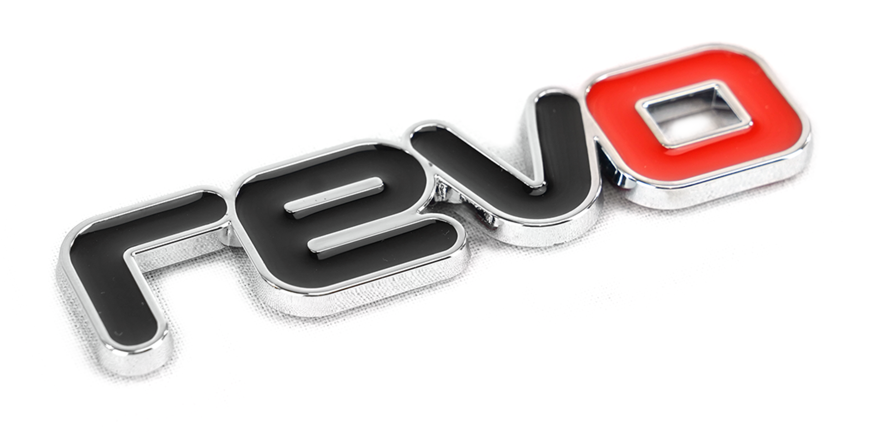
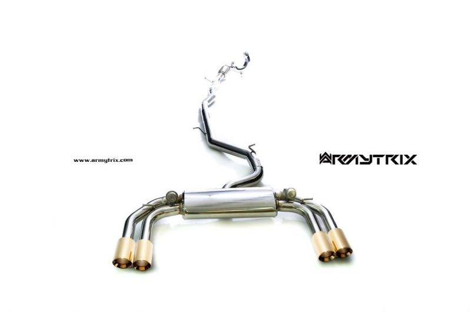

Modificaciones
Los golf gti (en la mayoria de sus generaciones, principalmente de las mk4 en adelante) son autos altamente modificables por bajos montos llevandolos a autos verdaderamente violentos ya sea esteticamente o en performance.
Modificaciones Mas Comunes:
- Reprogramacion
- Sistema De Escape
- Admision
- Reprogrmacion:
- Una reprogramación de motor es un cambio o modificación en la programación almacenada por la memoria de la unidad de control electrónico (ECU) de un automóvil u otro vehículo para lograr un rendimiento superior, ya sea más potencia, emisiones más limpias o una mejor eficiencia de combustible.

- Una de las empresas mas renocidas en lo que es grupo VAG en reprogramaciones son APR y REVO, 2 mounstruos de la industria.

Sistema De Escape:
Se suele cambiar el sistema de escape para complementar la reprogramacion, de esta manera los gases del motor saldran con mas libertad.

Admision:
La misma se cambia para que el vehiculo "respire" mejor, se coloca un filtro de alto flujo junto con un intake a medida.
<<<<<<< HEAD
=======
Despues hay modificaciones mas extremas o que apuntan a otros resultados, como inyectores, llantas, neumaticos, frenos, embreagues etc.
En cuanto a lo estetico depende mucho del usuario y queda a interpretacion de cada uno, actualmente la moda es poner fibra de carbono en todos lados.
En nuestra seccion de Proyectos tenemos una galeria imagenes de los golf gti mas excentricos o tambien para otro tipo de usuarios golf gti modificados de forma sutil y señorial.
>>>>>>> cd4217c (subimos proyecto)